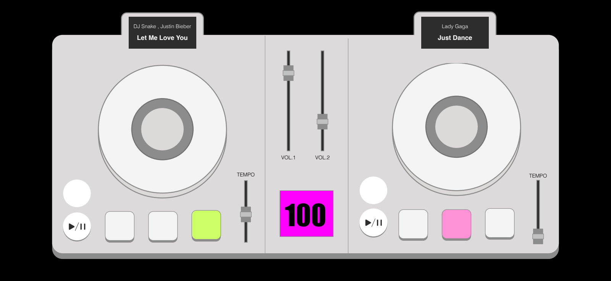

컴퓨터 · 연결 상태
컴퓨터는 서버를 실행하고 연결 상태만 보여줘요.휴대폰·태블릿 두 대에서 아래의 같은 주소를 열어주세요.
컴퓨터와 두 기기를 같은 Wi-Fi에 연결하고서버 터미널을 켜두세요.
친구와 연결하는 중…
휴대폰·태블릿 두 대가 접속하면 3초 뒤 역할이 정해져요.
You are...

폰을 가로로 돌려주세요.
DANCER움직임 감지를 켜고 폰을 쥔 채 춤춰요. 한 번 흔들면 숫자가 하나 줄고 색이 바뀌어요.
DJ원판을 앞뒤로 돌리고, 패드를 눌러요. 템포와 볼륨은 손잡이를 위아래로 밀어요.
100회를 함께 채우면 두 화면에 콩페티가 내려요.
컴퓨터와 두 폰을 같은 Wi-Fi에 연결하고, 터미널에 표시된 휴대폰 주소를 열어요. 서버 터미널은 켜둬야 해요.
이전 프로토타입의 인증서와는 달라요. 이번 컴퓨터에서 생성한 인증서를 사용해주세요. 시연 후 해당 프로파일을 삭제할 수 있어요.